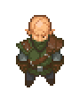

Snake
| Snake | |
|---|---|
 | |
Basic Information
| |
Location :
|
Alchemy Lab, Cellar, Dungeon |
Role :
|
Cultist |
Day :
|
first: every night later: |

Snake is a cultist who spends his time in the tunnels below the graveyard. He hates village residents and talks about ending them. Horadric mentions him in the Royal Stamp quest. The rubble in the tunnels beneath your home will prevent you from reaching Snake until it is cleared. His real name is Seth.
You meet Snake by going into cellar for the first time. A cut scene plays, showing his efforts to get past the gate and access the dungeon. After you meet Snake the first time, he appears every night until you open the door.
Once the door has been opened (with the activated key), he shows up every  .
.
Rewards
Town Pass
At 20  Snake will offer you a
Snake will offer you a
Town pass which can be used to get past the guards to the south of the village and access the town.
Royal Stamp
At 30  Snake will give you a
Snake will give you a
stamp free of charge.
Restoration Tools
If you are stuck at 30 reputation start "the necklace" quest for Ms. Charm (see below).
At 40  Snake will give you
Snake will give you
Restoration tools for the questline of the Astrologer.
Main Quest
At 60  Snake will help you to get the parts for the laser on the town.
Snake will help you to get the parts for the laser on the town.
Warning: Here comes a spoiler!
He tells you that:
The Bishop has the
Mirror of pride
The Inquisitor has the
Eternal burning coal
And the Merchant has the
Salty fork.
Quests
Prove You Are the Graveyard Keeper
- At night, find Snake near the closed gate underneath the Sweet Home.
- Snake does not believe you are the graveyard keeper, he has no interest in you and you annoy him.
- Return to him with 5×
Faith.
Unlocking the Sacrifice Zone and Dungeon
- Speak to the Astrologer and accept his quest to find the
Keepers journal. He will give you the
Keepers key. - Give Snake the unusable
Keepers key, to receive the
Instructions for key. - Study the
Keepers key at a Study table with the
Instructions for key in your inventory to get an
Active key. - Give the
Active key to Snake. - Rewards:
- +10
 with Snake.
with Snake. - Snake's schedule changes, so he will now only show up on
 instead of every night.
instead of every night. - The gate to the Sacrifice Zone is unlocked.
- The player gains access to the Dungeon.
- The player gains access to Gunter.
- +10
The Necklace
Requires: 30  with Snake.
with Snake.
- Select the dialogue option asking about Ms. Charm's
necklace.- Reward: +10 with Snake.
- Reward: +10
- He tells the player that Koukol has it now.
Help Snake with the Ritual
After you hand him the
active key, a cutscene plays where you die trying to get the
Keepers journal, but just return to your bed. You discover that you are functionally immortal.
- Bring Snake 5×
Bloody nails. These are dropped by Iron Maidens on levels 4+ of the Dungeon.- Reward: +10 with Snake.
- Reward: +10
- Bring Snake a 1×
Bucket of blood.- Dungeon level 5 will always have a chest containing it.
- 1×
Bucket of blood can be crafted at a church workbench using 10×
Blood. At some point in the Game of Crone DLC, you can deliver any leftover
Bucket of blood to a related NPC.
- Reward: +10 with Snake.
Return to Snake. He will attempt a ritual, fail, and then ask the player to help him find a
Necronomicon.
- Collect the
Restoration tools from Snake, if you have not done so already.- You will need to deliver them to the Astrologer to gain enough Reputation to unlock the dialogue option about the
Necronomicon.
- You will need to deliver them to the Astrologer to gain enough Reputation to unlock the dialogue option about the
- Speak with the Astrologer about the
Necronomicon; he'll say that he gave it to the Lighthouse Keeper. - Speak with the Lighthouse Keeper and give him 5×
Maggot in exchange for the Necronomicon. - Bring the
Necronomicon to Snake to gain +10.
Once he is given the
Necronomicon, Snake will ask the player to decorate the Sacrifice Zone for the ritual.
- Build decorations in the Sacrifice Zone to increase its
 .
.
- At the blueprint table, craft all of the available blueprints.
- Once the two blood fountains are built, make sure they are filled (a "craft" option appears while standing near them).
- Speak with Snake when the Sacrifice Zone has reached 20 .
- Rewards: +10 .
- Rewards: +10
- Bring Snake a
Damask sword with gem. The player can purchase one from Koukol at night, or craft it themselves if they have unlocked the required technology.- Rewards: +10 .
- Rewards: +10
- Observe the "ritual" cutscene.
- After the cutscene, return to the Sacrifice Zone and speak to Snake.
Ambush the Vampire Hunter
- At any time after completing the ritual for Snake, go to sleep, and then wake up.
- Observe a cutscene where Snake is at your bedside when you wake. Snake asks the player to help them set a trap for a vampire hunter.
- Deliver 1×
Wooden plank to Snake, who will be located just south of the vineyard on Witch Hill. If the player takes the path from the main road, he can be seen near the giant round boulder.- Rewards: +10
- Rewards: +10
- Observe a long cutscene where Snake and the player wait, and then kill the hunter with a boulder.
- Time will skip forward, but the player will be returned to the weekday and time they began the cutscene at its conclusion.
- Mine the Boulder to obtain the medallion that unlocks Dungeon levels 11-15, plus 6×
a piece of stone and a corpse with 7 x
corpse with 7 x  and 3 x
and 3 x  (including two Dark organs - but no fat). The corpse will also yield only one sin shard when its soul is cleaned.
(including two Dark organs - but no fat). The corpse will also yield only one sin shard when its soul is cleaned.
The Golden Apple
- When you ask Snake about the last task, he will bid you to get the
Golden apple from the dungeon.- Rewards: 10 by this.
- When you get it and give it to him he will ask if you would like to lick it. If you say yes you will get 100
 .
.
- Rewards: 10
- Can be found at the end of the last floor (level 15) of the dungeon.
- You can also buy it from Clotho for
 10 .
10 . - Or get it by a Woodcutter quest.
The Dark Heart
After receiving the
Golden apple Snake will remember the last ingredient of his ritual, a
Dark heart. Bring him one, and he will leave to summon his followers. Gerry shows up and hints, that the results of the ritual will be hilarious and not at all what Snake expects.
He returns with his followers and proceeds to summon his father, who turns out to be none other than the Inquisitor himself! After being dramatically reunited, they both give you their treasured possessions. You receive Snake's
Endless notebook and the Inquisitor's
Eternal burning coal. (Steam achievement "A father and a son" unlocked)
Trivia
- The Vampire Hunter bears similarity to Geralt of Rivia, the protagonist of the Witcher game series
- There are hints that Snake is Inquisitor’s son - he was pulled out from burning house and was raised in a Orphanage and Inquisitor says that he never found his son's body.
| |||||||||||||||||||||||||||||